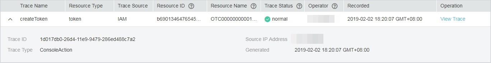

Scenarios
CTS starts to record ECS operations after it is provisioned. You can view the operation records of the last seven days on the management console.
This section describes how to view the operation records.
Procedure
- Log in to the management console.
- Click
 in the upper left corner and select your region and project.
in the upper left corner and select your region and project. - Click Service List. Under Management & Governance, click Cloud Trace Service.
- In the navigation pane on the left, choose Trace List.
- Specify filter criteria as needed. The following filter criteria are available:
- Trace Source, Resource Type, and Search By
Select a filter criterion from the drop-down list.
If you select Trace name for Search By, you need to select a specific trace name.
If you select Resource ID for Search By, you need to select or enter a specific resource ID.
When you select Resource name for Search By, you need to select or enter a specific resource name.
- Operator: Select a specific operator (which is a user rather than the tenant).
- Trace Status: Available options include All trace statuses, normal, warning, and incident. You can only select one of them.
- Time Range: You can view traces generated during any time range of the last seven days.
- Trace Source, Resource Type, and Search By
- Expand the trace for details.Figure 1 Expanding trace details
 - Click View Trace. A dialog box is displayed, in which the trace structure details are displayed.
For more information about CTS, see Cloud Trace Service User Guide.